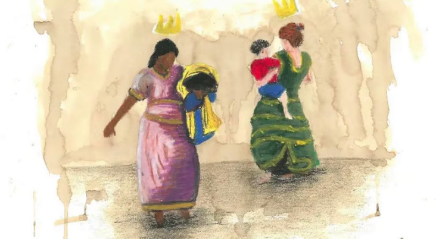

Legislação vigente que ampara a população cigana
Levantando as lonas: introdução

Nesta aula será mostrado que os elementos que determinam racialmente os povos ciganos não surgiram recentemente, nem teve início no Brasil. Apesar do nomadismo ser fortemente associado às nossas etnias, sua chegada a esse território não se dá por força da vontade de estar aqui.
Em 1574, suposto ano da primeira chegada cigana nesta terra que está grafado, não imaginaríamos ciganos atravessando o mar para uma terra desconhecida em suas comunidades na Europa.
A primeira legislação que temos vinculando o Brasil que foi inventado, aos povos ciganos, veio da antiga colônia portuguesa e seu clero. A Santa Inquisição e os Tribunais do Santo Ofício da Igreja Católica Romana, assim como a monarquia portuguesa atribuíam a essas etnias, uma impureza e maledicência em que eram atribuídas penas de detenção e apropriação dos bens ciganos. O próximo nível dessa legislação – após o dinheiro de diversas coroas europeias ter sido escoado para navegar em outras terras com potencial de apropriação de riquezas – foram as penas de degredos. Com nova terra “descoberta” não havia por que os “ciganos impuros” continuarem em terras portuguesas. Melhor era enviar os indesejados para longe, para povoar a nova terra ocupada (GUIMARAIS, 2012, p. 24):
“(...) o grupo calon/calé/caló é proveniente dos países ibéricos. Imigraram em grandes números para o continente americano (dos Estados Unidos à Argentina) e possuem concentrações na França, Alemanha e Grã-Bretanha. O termo cale significa “preto” (em romani) e falam geralmente espanhol ou português e chib (derivado do romani). Foram os primeiros a chegar ao Brasil, como deportados de Portugal a partir do século 16. Ao lado dos roma, compõem um grupo numeroso no Brasil.” (GUIMARAIS, 2012, p. 77).
Se examinarmos a lei Filipina em vigor em Portugal entre 1603 e 1774, observaremos que os ciganos estavam proibidos de ingressar no Reino de Portugal e seriam punidos caso permanecessem lá (Ibidem, p. 23). Sua consequente pena de deportação para o Brasil foi muito oportuna para essa nação:
“A visão dos ciganos partindo acorrentados demonstrava para os espectadores o esforço da coroa pelo controle social. Isso e a publicação dos banimentos subsequentes assinalavam, sem dúvida, que a assimilação não era mais uma opção dos ciganos para escapar de seu status criminoso.” (apud GUIMARAIS, 2012, p. 24).
Durante quase 300 anos a coroa portuguesa degredou sistematicamente pessoas ciganas para o Brasil, especialmente, para o nordeste. Enquanto colônia portuguesa, as mesmas leis anticiganas, violentas e persecutórias aplicadas por lá, valiam por cá. Enquanto nação independente de Portugal, o estado brasileiro também sancionou legislações anticiganas, a exemplo da era Getúlio Vargas, que incentivou a vinda de imigrantes europeus, especialmente, alemães e italianos, enquanto proibia a entrada de pessoas ciganas no país, o que de fato, não surtiu efeito, pois a imensa maioria dos grupos ciganos de etnia Rom e Sinti vieram ao país nesse bojo de incentivos, escondendo suas verdadeiras origens ciganas (SILVA JÚNIOR, 2018).
Ou seja, a tradição que compreende o “cigano” como tal, é tratada até os dias presentes e vem de sua consequência social e histórica. Um preconceito ou racialização não cai do céu, mas é construído historicamente, por meio da socialização que tem como uma de suas mãos, a legalidade. Ela forja consensos (MACEDO, 2021). Essa socialização soldou a vida cigana no Brasil, que tinha como determinação, por exemplo, que “qualquer cidadão podia prender ciganos e entregá-los na cadeia mais próxima, podendo a pessoa tomar-lhes todos os bens, ouro, roupas ou cavalos” (MOONEM, 2013, p. 88). E a ironia é que o contrassenso disso se tornou parte do imaginário popular: a de que ciganos roubam.
Somente após a redemocratização do país, mais especificamente dos anos 2000, é que começaram a surgir as primeiras normativas e políticas afirmativas que amparam os povos ciganos, incluindo na própria saúde.
Vamos conhecer a seguir normativas e políticas afirmativas que amparam os povos ciganos.
Tempos de democracia e Constituição firmada pela cidadania
O artigo 215 da Constituição de 1988 assegura a proteção às manifestações culturais indígenas, afro-brasileiras e dos Povos e Comunidades Tradicionais:
Art. 215. O Estado garantirá a todos o pleno exercício dos direitos culturais e acesso às fontes da cultura nacional, e apoiará e incentivará a valorização e a difusão das manifestações culturais.
§ 1º O Estado protegerá as manifestações das culturas populares, indígenas e afrobrasileiras, e das de outros grupos participantes do processo civilizatório nacional.
2º A lei disporá sobre a fixação de datas comemorativas de alta significação para os diferentes segmentos étnicos nacionais.
Aqui podemos fazer um adendo para o dia 24 de maio, dia nacional dos povos ciganos do Brasil, instituído pelo presidente Lula em 25 de maio de 2006, que é também comemorado o dia de Santa Sara Kali, uma entidade espiritual muito próxima de algumas comunidades ciganas, como a da família Stanescon, do agrupamento rom Kalderash do Rio de Janeiro. Somente em 2006 a lei garantiu o parágrafo segundo do artigo da Constituição citado acima e este é um marco, pois trata-se do primeiro reconhecimento normativo específico dos povos ciganos por parte do governo federal e do estado brasileiro.
Seguimos com os pontos da legislação:
3º A lei estabelecerá o Plano Nacional de Cultura, de duração plurianual, visando ao desenvolvimento cultural do País e à integração das ações do poder público que conduzem à:
I defesa e valorização do patrimônio cultural brasileiro;
II produção, promoção e difusão de bens culturais;
III formação de pessoal qualificado para a gestão da cultura em suas múltiplas dimensões;
IV democratização do acesso aos bens de cultura;
V valorização da diversidade étnica e regional.
A definição de Povos e Comunidades Tradicionais, segundo o artigo 3º do Decreto n. 6.040 que nasce em 2007, e institui a Política Nacional de Desenvolvimento Sustentável dos Povos e Comunidades Tradicionais é:
I - Povos e Comunidades Tradicionais: grupos culturalmente diferenciados e que se reconhecem como tais, que possuem formas próprias de organização social, que ocupam e usam territórios e recursos naturais como condição para sua reprodução cultural, social, religiosa, ancestral e econômica, utilizando conhecimentos, inovações e práticas gerados e transmitidos pela tradição;
De acordo com o decreto Nº 8.750, de 9 de maio de 2016 (BRASIL, 2016), os povos reconhecidos pelo Estado brasileiro são:
- povos indígenas;
- comunidades quilombolas;
- povos e comunidades de terreiro/povos e comunidades de matriz africana;
- povos ciganos;
- pescadores artesanais;
- extrativistas;
- extrativistas costeiros e marinhos;
- caiçaras;
- faxinalenses;
- benzedeiros;
- ilhéus;
- raizeiros;
- geraizeiros;
- caatingueiros;
- vazanteiros;
- veredeiros;
- apanhadores de flores sempre vivas;
- pantaneiros;
- morroquianos;
- povo pomerano;
- catadores de mangaba;
- quebradeiras de coco babaçu;
- retireiros do Araguaia;
- comunidades de fundos e fechos de pasto;
- ribeirinhos;
- cipozeiros;
- andirobeiros;
- caboclos.
Embora sem citar os ciganos, no contexto internacional, a Convenção 169 da Organização Internacional do Trabalho, de 1989, conhecida como a “Convenção Relativa aos Povos Indígenas e Tribais em Países Independentes”, ratificada pelo Decreto nº 5.051, de 19 de abril de 2004 no Brasil, trata das minorias étnicas, que incluem também os ciganos:
Artigo 1º
1. A presente convenção aplica-se:
a) aos povos tribais em países independentes, cujas condições sociais, culturais e econômicas os distingam de outros setores da coletividade nacional, e que estejam regidos, total ou parcialmente, por seus próprios costumes ou tradições ou por legislação especial;
b) aos povos em países independentes, considerados indígenas pelo fato de descenderem de populações que habitavam o país ou uma região geográfica pertencente ao país na época da conquista ou da colonização ou do estabelecimento das atuais fronteiras estatais e que, seja qual for sua situação jurídica, conservam todas as suas próprias instituições sociais, econômicas, culturais e políticas, ou parte delas.
2. A consciência de sua identidade indígena ou tribal deverá ser considerada como critério fundamental para determinar os grupos aos que se aplicam as disposições da presente Convenção.
3. A utilização do termo “povos” na presente Convenção não deverá ser interpretada no sentido de ter implicação alguma no que se refere aos direitos que possam ser conferidos a esse termo no direito internacional.
(...)
Artigo 8º
1. Ao aplicar a legislação nacional aos povos interessados deverão ser levados na devida consideração seus costumes ou seu direito consuetudinário.
2. Esses povos deverão ter o direito de conservar seus costumes e instituições próprias, desde que eles não sejam incompatíveis com os direitos fundamentais definidos pelo sistema jurídico nacional nem com os direitos humanos internacionalmente reconhecidos. Sempre que for necessário, deverão ser estabelecidos procedimentos para se solucionar os conflitos que possam surgir na aplicação deste princípio.
3. A aplicação dos parágrafos 1 e 2 deste Artigo não deverá impedir que os membros desses povos exerçam os direitos reconhecidos para todos os cidadãos do país e assumam as obrigações correspondentes.
É possível notar que a gama de legalidade que cita povos ciganos nominalmente é escassa, recaindo nos critérios da subjetividade para se resguardar enquanto “cidadão de direitos”. É “uma subjetividade que se organiza conforme a disposição de quem detém mais poder na hegemonia” (MACEDO, 2021).
O quase desconhecido Brasil que legisla em “favor” do cigano...
(...) a própria Constituição Federal e a Convenção 169 da OIT, não estão sendo cumpridos em relação aos povos ciganos. Pensando em termos comunicacionais, [...] a invisibilidade e o apagamento históricos foram tão fortes contra os ciganos, que as comunidades romani se configuram como a minoria étnica no Brasil que menos consegue acessá-las, apesar de estar no Brasil desde 1574 (SILVA JÚNIOR, 2018, p. 275).
É um desafio reconstruir a trajetória nacional cigana. O universo da etnia é influenciado por diversos contextos.
A memória cigana expressa precisamente um traço comum experimentado pelos povos: a resistência às dores e sofrimentos causados pela rejeição, exclusão e segregação por parte das sociedades não ciganas. Ao longo dos séculos, várias leis anticiganas foram estabelecidas, resultando em uma vasta gama de penalidades e punições (Ibidem, p. 45).
Diversas leis eram estabelecidas pelas Câmaras Municipais que, ao acolherem ciganos de outras cidades, também se apressavam em enxotá-los. No século XVIII, isso acontecia praticamente todos os anos: assim que os ciganos retornavam de uma expulsão, já precisavam se organizar para retornar para outros cantos do Brasil.
Minas Gerais manda seus ciganos para São Paulo, que os manda para o Rio de Janeiro, que os manda para o Espírito Santo, que os manda para a Bahia, de onde são enviados para Minas Gerais, e assim sucessivamente. Em outras palavras, o melhor local para os ciganos é sempre no bairro, cidade ou estado adjacente, ou ainda no país vizinho ou num país bastante distante. Também é importante mencionar algumas das cidades e localidades onde foram criadas leis contra os ciganos. É o caso de Salvador, onde era proibido aos ciganos recém-chegados “usar a gíria e transmiti-la aos seus filhos” (TOURINHO, s.d.).
O processo que resultou na perseguição contínua aos ciganos no Brasil ainda não foi concluído. Os grupos itinerantes ou semi-itinerantes dispõem de escassos locais para estabelecer seus acampamentos, especialmente com estrutura de serviços de saneamento básico (água, esgoto, recolha de lixo) e luz elétrica, devido a decisões de natureza discricionária que proíbem sua permanência em terras que não sejam especificamente a eles destinadas. No universo da destinação privada do Código Civil, esses espaços não existem. Embora a Constituição Brasileira de 1988, em seu artigo 5º, XV, determine que todos têm o direito de se deslocar dentro do território nacional, parece que isso não se aplica aos ciganos que persistem na tradição itinerante (SILVA JÚNIOR, 2018).
O aumento progressivo de grupos que se tornam sedentários e que, de alguma forma, perdem suas características iniciais de estarem em movimento ocorre por imposição. Por isso, é interessante nunca analisar nenhum contexto fora de seu contexto maior, a hegemonia do Estado moderno.
Observamos que a perspectiva sobre o “cigano” permanece inalterada, “assomando uma invisibilidade que contribui para a sua vulnerabilização sem descanso para as comunidades, diversas violações de direitos estabelecidos, perseguição etnocida e racista, discriminação e atos de violência que tendem a acontecer nessa amorfa clandestinidade” (MACÊDO; FERREIRA, 2022, p. 226). A representação cigana em programas de TV, minisséries e documentários disponíveis em nossas plataformas de mídia, retrata um cigano sempre com uma postura folclórica, vestindo roupas vibrantes, homens usando chapéus e lenços de pirata e mulheres exibindo sensualidade. A maioria das mulheres ciganas do Brasil sequer tem em sua tradição o uso de lenços. Esses estereótipos são aceitos pelo público em geral, contudo, as pessoas ciganas que residem nas periferias, em barracas desprotegidas e que empregam seus artifícios como comerciantes, são totalmente rejeitadas, diferente dos não-ciganos que se apropriam desses estereótipos para fazer de suas vidas, como uma performance distante de si mesmos. Os ciganos étnicos se tornam perigosos e são vistos como violadores das normas éticas da sociedade e os não-ciganos podem fazer e ganhar dinheiro do jeito que bem entenderem.
Adentrando ao que é dito em favor dos ciganos...
No dia 1º de agosto de 2024, é lançado no Brasil, sob a regência do Ministério da Igualdade Racial, um decreto para povos ciganos. O Decreto nº 12.128, de 1 de agosto de 2024 , que institui o Plano Nacional de Políticas para Povos Ciganos e foi assinado pelo chefe de governo Luiz Inácio Lula da Silva e publicado no Diário Oficial da União (DOU) no dia 2 de agosto de 2024.
Nesse sentido, permanece como aspecto relevante a discussão sobre o fortalecimento e a institucionalização das ações destinadas aos povos ciganos no Brasil. Embora os decretos constituam instrumentos importantes para a organização e regulamentação da atuação do Poder Executivo, a consolidação dessas iniciativas por meio de instrumentos legislativos específicos pode contribuir para conferir maior estabilidade, continuidade e segurança jurídica às políticas públicas voltadas a essa população. Assim, a construção de marcos legais que reconheçam e orientem de forma mais abrangente os direitos e as especificidades dos povos ciganos pode representar um importante avanço para o fortalecimento da política no país.
Invisibilidade social cigana
Uma questão a ser levada em conta, quando falamos de legislações e de políticas públicas afirmativas é a invisibilidade histórica e social porque passaram e passam os povos ciganos na história, na literatura, nas artes brasileiras e nos dados estatísticos, incluindo do Sistema Único de Saúde (SUS).
(...) a arte secreta da invisibilidade cria uma crise na representação da pessoa e, nesse instante crítico, inaugura a possibilidade de subversão política. O que toma (o) lugar, no sentido do suplemento derridiano, é o mau olho desencarnado, a instância subalterna que executa a vingança circulando sem ser visto (...) O movimento anti-dialético da instância subalterna subverte qualquer ordenação binária ou negadora, de poder e signo, ele adia o objeto do olhar e o dota de um impulso estratégico, que podemos aqui analogamente chamar de movimento de pulsão de morte. (BHABHA, 2005, p. 91)
A ausência de visibilidade na mídia resulta em uma comunicação descuidada e na falta de indicadores e órgãos que tratem das desigualdades em todos os níveis da burocracia estatal. Não há políticas públicas, recursos financeiros, serviços adequados, acesso de qualidade e igualdade sem visibilidade, informação e comunicação. Populações marginalizadas, socialmente e politicamente, não recebem a devida atenção em termos de políticas e serviços públicos, recursos financeiros, informação e comunicação (SILVA JÚNIOR, 2018, p. 55-56).
Neste cenário, situamos a questão relacionada às culturas ciganas que atualmente buscam precisamente afirmar suas identidades, enquanto denunciam as opressões, além de provocar o descolamento de silenciamentos e invisibilidades históricas.
Numerosos grupos optaram e continuam a optar por ocultar sua identidade cigana como tática de sobrevivência. Ademais, o Estado reduziu a supervisão policial, porém aumentou a exclusão através da invisibilidade e do silenciamento, ou na perpetuação de estigmas, preconceitos e discriminações (Ibidem, 2018).
É visto positivamente que pessoas não-ciganas se fantasiem da etnia, mas não é positivo ser cigano de verdade.
Equidade e direito à saúde dos povos ciganos
Especialmente no âmbito da Atenção Primária à Saúde, a garantia do direito à saúde dos povos ciganos encontra fundamento nos princípios e diretrizes que orientam o Sistema Único de Saúde (SUS), entre os quais se destaca a equidade.
Na Lei Orgânica da Saúde (Lei nº 8.080/1990), o princípio expresso no art. 7º, inciso IV, é o da “igualdade da assistência à saúde, sem preconceitos ou privilégios de qualquer espécie”.
Embora o termo “equidade” não conste expressamente na redação original desse dispositivo, sua compreensão está relacionada à própria organização do SUS e à necessidade de considerar as diferentes condições e necessidades dos grupos populacionais para assegurar a efetividade do direito à saúde.
A equidade constitui importante referência para a formulação e implementação das políticas públicas de saúde, permitindo o reconhecimento das desigualdades sociais, históricas, territoriais e culturais que podem produzir diferentes condições de acesso e cuidado. Assim, a concretização do princípio da igualdade pressupõe, em determinadas situações, a adoção de estratégias diferenciadas capazes de responder às necessidades específicas de populações que vivenciam contextos particulares de vulnerabilidade e desigualdade.
No caso dos povos ciganos, essa perspectiva orienta a construção de ações que considerem suas especificidades socioculturais, territoriais e históricas, contribuindo para a redução de barreiras de acesso e para a promoção de uma atenção à saúde mais adequada às suas necessidades. Ao longo da consolidação das políticas de saúde do SUS, o conceito de equidade passou a ser incorporado de forma mais explícita em normativas e políticas do Ministério da Saúde, incluindo, a partir de 2017, instrumentos que apresentam a equidade expressamente como princípio ou diretriz para a organização das redes e das ações de saúde. Nesse percurso, destacam-se:
Consolida as normas sobre os direitos e deveres dos usuários da saúde. Em seu texto, ao regulamentar o direito ao atendimento, estabelece-se a garantia de equidade de forma clara, proibindo qualquer discriminação ou privilégio no acesso aos serviços.
A PNAB é uma das normativas operacionais mais robustas do SUS. Nela, a Equidade é expressamente listada ao lado da Universalidade e da Integralidade como um dos Princípios do SUS a serem seguidos obrigatoriamente em todos os territórios de saúde do país.
Além disso, outras duas normativas do MS também amparam o atendimento dos povos ciganos na APS e em outros âmbitos do Sistema Único de Saúde:
Essas legislações são fundamentais para a prática cotidiana no Sistema Único de Saúde, especialmente porque os profissionais de saúde devem traduzir os dispositivos legais em implicações concretas para o trabalho em saúde.
Mas o que muda na prática da APS a partir dessa legislação?
Os marcos legais respaldam o acolhimento de famílias ciganas nos serviços de saúde, orientam a organização do cuidado frente às situações de mobilidade territorial e protegem contra práticas discriminatórias e violências institucionais nos serviços. A APS deve ser um espaço de efetivação dos direitos, articular legislação, vigilância em saúde e cuidado no território, reconhecer os profissionais como sujeitos ativos da política pública e transformar normas jurídicas em orientações práticas para o SUS. Vejamos três exemplos:
Elimina a exigência de comprovante de residência para cadastramento e atendimento na APS, garantindo que a itinerância e o nomadismo não sejam motivos para a exclusão do SUS.
Reconhece formalmente os ciganos como povos e comunidades tradicionais, obrigando as equipes de saúde da família a adequar o mapeamento territorial às suas realidades e dinâmicas de acampamento.
Ao instituir a Política Nacional de Atenção Integral à Saúde do Povo Cigano/Romani, exige que os cuidados de saúde respeitem os papéis de gênero, os ritos tradicionais e as dinâmicas comunitárias locais através de uma escuta culturalmente sensível e livre de preconceitos (anticiganismo).
Em suma, essas leis transformam o "tratar igual" em equidade real, obrigando a APS a ir até as comunidades em vez de exigir que elas se moldem ao modelo sedentário tradicional do sistema de saúde.
Assista à série polonesa “Infâmia”, sobre uma adolescente cigana romani de 17 anos que enfrenta desafios para realizar o sonho de ser rapper.